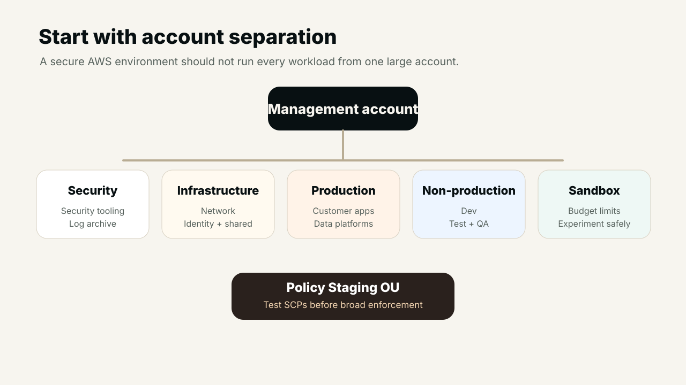
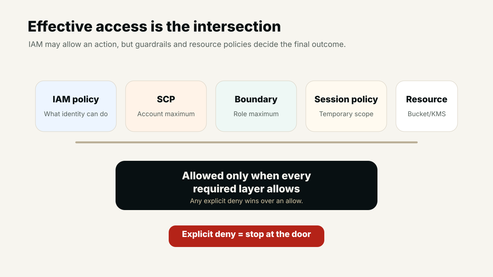
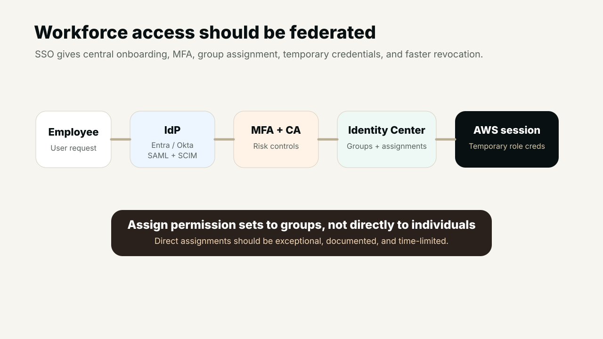
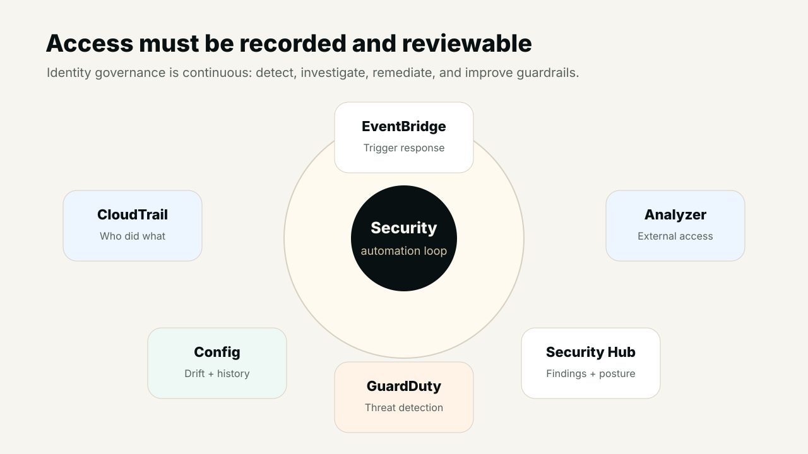

01 · Objective
AWS security is not one IAM policy
Securing AWS is not achieved by attaching one IAM policy or enabling one security product. Effective access governance uses multiple layers: identity protection, authorization controls, organization guardrails, resource policies, encryption permissions, monitoring, and continuous review.
The correct identity should receive the correct access, to the correct resource, for the correct duration, under the correct conditions, and every action should be recorded and reviewable.
This is why IAM must be designed as an operating model. AWS Organizations sets boundaries around accounts. IAM Identity Center controls workforce access. Roles and temporary credentials reduce long-term secrets. SCPs, boundaries, session policies, bucket policies, KMS policies, and endpoint policies narrow what is possible. CloudTrail, Config, GuardDuty, Security Hub, Macie, Inspector, and Access Analyzer help prove what happened and where risk remains.
02 · Multi-account foundation
Start with account separation before permission tuning
A secure AWS environment should not operate every workload from one large account. Account separation reduces blast radius, simplifies policy targeting, and makes it easier to apply different controls to production, development, testing, sandbox, regulated workloads, and shared services.
Keep the management account focused on AWS Organizations, billing, and essential organization administration. Use dedicated accounts for security tooling, log archive, networking, identity utilities, production workloads, non-production workloads, sandbox usage, and policy staging.

03 · SCPs
Service Control Policies are guardrails, not permission grants
A Service Control Policy establishes the maximum permissions available inside member accounts. It does not grant access by itself. A user or role still needs IAM permissions that allow the action, and other policy layers may still restrict the request.
Effective access =
Identity-based allow
AND SCP permits the action
AND permissions boundary permits the action
AND session policy permits the action
AND resource policy permits the action
AND no applicable explicit deny existsExplicit deny is powerful because it overrides allow. That makes deny-based guardrails useful for protecting CloudTrail, GuardDuty, log archives, security roles, public S3 exposure, root usage, encryption settings, risky Regions, and organization membership.

04 · Practical SCP examples
Protect the controls that protect the platform
SCPs should be adapted, tested in a Policy Staging OU, rolled out gradually, and monitored carefully. Region restrictions, CloudTrail protection, GuardDuty protection, S3 public access protection, role protection, tagging requirements, and prevention of organization exit are common starting points.
{
"Version": "2012-10-17",
"Statement": [
{
"Sid": "ProtectCloudTrail",
"Effect": "Deny",
"Action": [
"cloudtrail:StopLogging",
"cloudtrail:DeleteTrail",
"cloudtrail:UpdateTrail"
],
"Resource": "*",
"Condition": {
"ArnNotLike": {
"aws:PrincipalARN": [
"arn:aws:iam::*:role/SecurityAdministrationRole"
]
}
}
}
]
}The same pattern can protect GuardDuty detectors, security roles, log archive buckets, encryption configuration, account public access settings, and high-risk administrative APIs. The important design rule is simple: security controls should not be removable by ordinary workload administrators.
05 · Resource control
SCPs control your identities; resource policies protect your resources
SCPs limit what identities in member accounts can do. Resource Control Policies and resource-based policies help protect resources from unintended access, including access from outside the organization. For S3, KMS, Secrets Manager, SQS, SNS, Lambda, ECR, API Gateway, IAM trust policies, and VPC endpoint policies, the resource policy is often just as important as the identity policy.
- S3 bucket policies should restrict public access, require TLS, require encryption, and where possible use organization, account, VPC endpoint, or principal conditions.
- KMS key policies should be explicit about who can administer keys, who can use keys, and which services or accounts are trusted.
- VPC endpoint policies can reduce the paths from which sensitive services are used.
- IAM Access Analyzer should be used to detect unintended external access to supported resources.
06 · IAM Identity Center
Workforce access should enter through enterprise SSO
IAM Identity Center is the preferred place to assign workforce access across multiple AWS accounts. It can connect to Microsoft Entra ID, Okta, Active Directory, SAML identity providers, and SCIM-compatible providers so onboarding and offboarding remain connected to the enterprise identity lifecycle.
Assign permission sets to groups rather than individual users. A practical model is an Entra or Okta group mapped into IAM Identity Center, assigned to a specific account or OU, and attached to a permission set such as ReadOnly, Developer, SecurityAudit, IncidentResponder, ProductionSupport, or PlatformAdministrator.

07 · Root and IAM users
Reduce long-term identities wherever possible
The AWS account root user should not be used for routine administration. It should have strong MFA, no access keys, controlled recovery information, monitoring, and a documented emergency procedure. Any root activity should generate immediate alerts.
IAM users are long-term identities inside an account. For workforce access, they should be avoided wherever federation is available. If legacy IAM users remain, they need an owner, business purpose, expiry date, restricted permissions, MFA for console access, access-key monitoring, and rotation controls.
- Use roles for humansFederated users should receive temporary role sessions through IAM Identity Center.
- Use roles for workloadsEC2 instance profiles, Lambda execution roles, ECS task roles, EKS workload identities, and CI/CD OIDC reduce static secrets.
08 · Temporary credentials
Access should expire by default
Temporary credentials reduce credential leakage risk because they expire automatically. They are commonly issued through AWS STS, role assumption, IAM Identity Center, SAML federation, web identity federation, EC2 instance profiles, ECS task roles, Lambda roles, EKS workload identity, GitHub Actions OIDC, and CI/CD federation.
For third-party cross-account access, use carefully scoped roles and consider an external ID to reduce confused-deputy risk. The trust policy decides who can assume the role; the role permissions decide what the session can do.
{
"Effect": "Allow",
"Principal": {
"AWS": "arn:aws:iam::111122223333:role/CentralDeploymentRole"
},
"Action": "sts:AssumeRole",
"Condition": {
"StringEquals": {
"sts:ExternalId": "deployment-platform-prod"
}
}
}09 · Boundaries and ABAC
Delegate safely with maximum-permission controls
Permissions boundaries define the maximum permissions an IAM user or role can receive from identity-based policies. They are useful when developers or automation systems can create roles, because the delegated builder cannot create identities beyond the approved maximum.
ABAC uses tags and attributes to scale authorization decisions. Instead of creating separate policies for every project, tag principals and resources with attributes such as Department, Project, Environment, DataClassification, or Owner. Then allow access when attributes match. ABAC is powerful, but only when tag governance is strong and tag modification is protected.
10 · Monitoring and response
Every access decision should leave evidence
Access governance is incomplete without logging, detection, and response. CloudTrail records API activity. AWS Config records configuration history and drift. GuardDuty detects suspicious behavior. Security Hub centralizes findings. IAM Access Analyzer identifies external access risk. Macie helps discover sensitive data exposure. Inspector finds vulnerability exposure.
EventBridge can turn high-risk events into response workflows: root user activity, CloudTrail changes, GuardDuty detector deletion, public S3 changes, creation of access keys, policy changes, failed assume-role attempts, or changes to security roles. Response can notify security teams, open tickets, quarantine access, roll back configuration, or trigger a runbook.

11 · Operating checklist
A practical access-governance checklist
- Separate accounts by function and environment, with dedicated management, security tooling, log archive, network, production, non-production, sandbox, and policy staging areas.
- Use SCPs to protect high-risk actions and security controls, but test them in a staging OU before broad enforcement.
- Use IAM Identity Center with enterprise SSO, MFA, SAML, SCIM, and group-based permission-set assignment.
- Prefer roles and temporary credentials over IAM users and static access keys.
- Protect root users with MFA, no access keys, controlled recovery, and immediate alerting.
- Use resource policies for S3, KMS, Secrets Manager, SQS, SNS, Lambda, ECR, API Gateway, and VPC endpoints.
- Use permissions boundaries when delegating IAM creation to developers, pipelines, or platform automation.
- Use ABAC where tags are governed and protected from unauthorized modification.
- Continuously monitor with CloudTrail, Config, GuardDuty, Security Hub, Access Analyzer, Macie, Inspector, and EventBridge workflows.
Useful links
References and implementation utilities
- AWS Organizations service control policiesHow SCPs establish account-level maximum permissions.
- AWS IAM Identity CenterCentral workforce access and permission-set assignment for AWS accounts.
- IAM permissions boundariesMaximum-permission controls for delegated IAM administration.
- AWS ABAC guidanceAttribute-based access control using tags and principal attributes.
- IAM Access AnalyzerAnalyze resource policies and external access paths.
- AWS CloudTrailRecord, investigate, and audit AWS API activity.
- Amazon GuardDutyDetect unauthorized or unusual activity in AWS accounts.